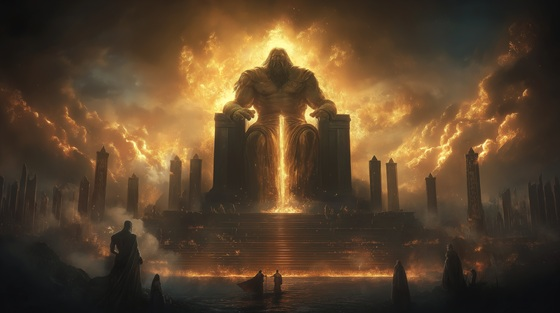

With the help of the Oceanid Metis, Zeus crafted a potion that caused Cronus, the king of the Titans, to vomit up the gods he had swallowed: Hestia, Demeter, Hera, Hades, and Poseidon. This pivotal moment in the myth marks the resurrection of divine power that Cronus tried to erase.
The return of the five Olympians sparked the first true challenge to Titan rule. With their freedom, the balance of power shifted, and the long-prophesied war between the younger gods and their Titan predecessors—the Titanomachy—was set into motion.
This myth underscores the theme of divine succession, betrayal, and justice, echoing the same cycle that doomed Uranus. The fire Cronus tried to extinguish now ignites the sky.
Fire from the Belly
I brought him wine laced with the flame
A gift disguised, a drink of shame
He raised the cup with hollow pride
And drank the storm he locked inside
He swallowed gods, he swallowed fear—
But now the reckoning draws near
Fire from the belly, storm from the core
The gods return, the oath is no more
He ate their names, but not their light
And now they rise to curse the night
First Hestia’s cry, then Demeter’s scream
Then Hera's wrath like shattered dreams
Hades followed, dark and cold
Then Poseidon, fierce and bold
One by one, they crash like flame—
The sky shall never speak his name
Fire from the belly, storm from the core
The gods return, the oath is no more
He ate their names, but not their light
And now they rise to curse the night
He bent in pain, the tyrant broke
The blood of Titans turned to smoke
I drew my kin and gave them breath—
From father's fear, we forged our death
CRONUS (gasping): “You treacherous whelp…”
ZEUS: “No, father. Just your final meal.”
Fire from the belly, storm from the core
The gods return, the oath is no more
He ate their names, but not their light
And now they rise to curse the night
From swallowed stars and silent cries—
The war begins where vengeance flies